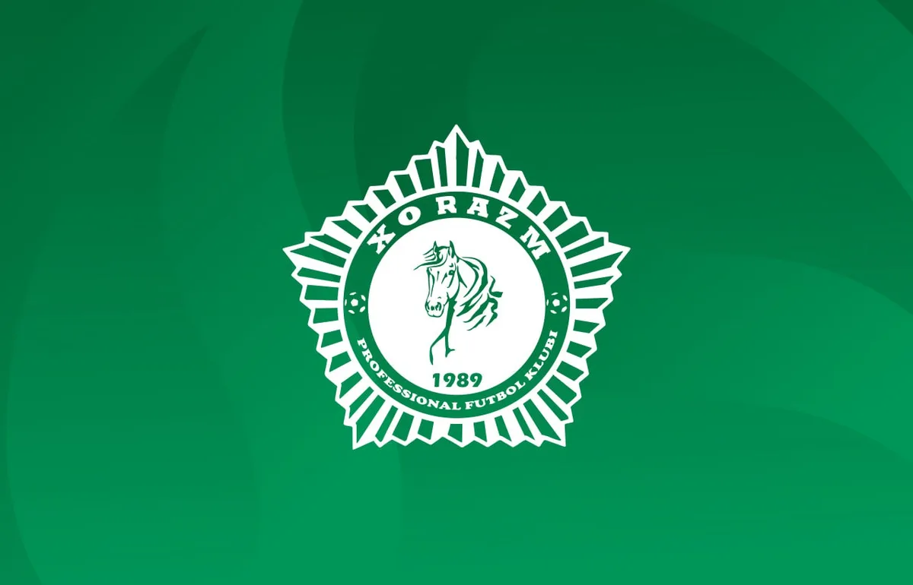
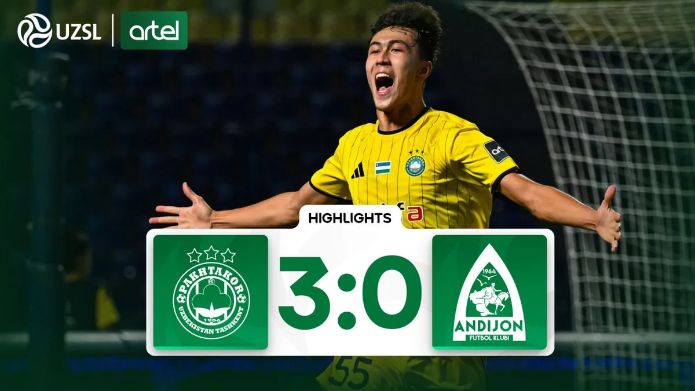
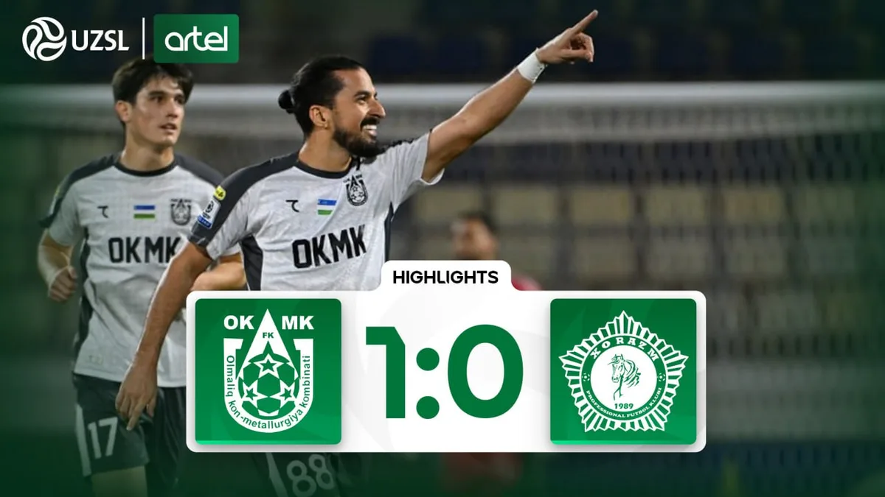
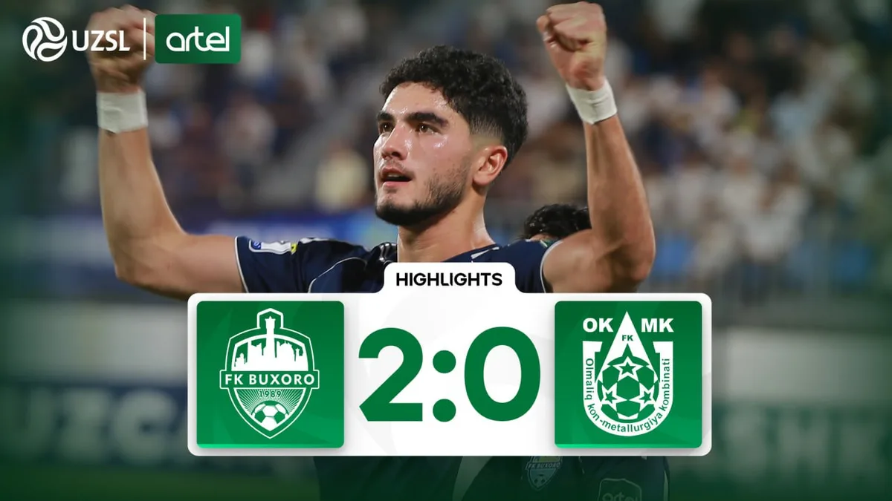
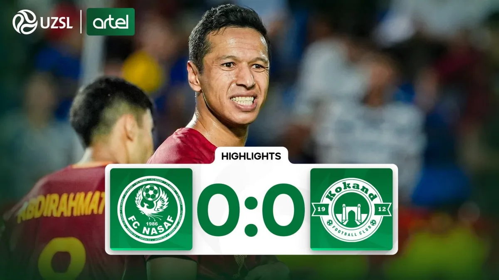

Video —
tushuntirish va suhbat
Yuristlarning qisqa tushuntirishlari, ish yutgan futbolchilar bilan suhbatlar va seminarlar yozuvi. Barchasi oʻzbek tilida, subtitrlar bilan.
 4:12
4:12
Huquqiy tushuntirish
Oylik kechikdi: birinchi 72 soatda nima qilasiz

9:38Suhbat
«Men ishni yutdim» — FIFA qarori olgan futbolchi hikoyasi

6:05Huquqiy tushuntirish
Kontraktdagi beshta xavfli band

41:20Seminar
Kelishilgan oʻyinlar: xavf va xabar berish yoʻllari

5:47Huquqiy tushuntirish
Antidoping nazorati: qadamma-qadam

12:03Suhbat
Free Agent Campʼdan keyin kontrakt olgan uchta oʻyinchi
—
Oʻzbekcha · subtitrlar mavjud
01:24 / 04:12